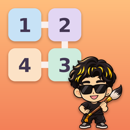

サポート
ひとふで10！ ／ 提供者：ruu404
数字をなぞってつないで、合計をぴったり10にするパズルゲームです。
遊び方
- 隣り合った数字を、指でなぞってつなぎます。斜めはつなげません。
- つないだ数字の合計がちょうど10になると、その数字が消えます。
- すべての数字を消すとクリアです。
モード
- ステージ：決まった盤面を、すべて消すモードです。「ヒント」で、つなぐ場所を教えてもらえます。
- エンドレス：数字が補充され続けるモードです。コンボでスコアが伸び、危険度が100%になるとゲームオーバーです。画面の「?」で詳しい説明を見られます。
- デイリーチャレンジ：1日1回の挑戦です。クリアタイムと最速タイムが記録されます。
よくある質問
ゲームの進み具合は、機種変更しても引き継げますか？
現在のバージョンでは、データは端末の中だけに保存されるため、引き継ぎには対応していません。アプリを削除すると、データも消えます。
デイリーチャレンジを、もう一度遊べますか？
1日1回の挑戦です。途中で戻った場合は、続きから再開できます。クリアまたは終了した日は、翌日0時以降に遊べます。
詰んでしまった（合計10を作れない）ときは？
ステージでは「リセット」で最初からやり直せます。エンドレスでは「シャッフル」で盤面を入れ替えられます（危険度が上がります）。
広告について
本アプリは広告を表示します。動画広告を見ると、エンドレスで復活できるなどの特典があります。詳しくはプライバシーポリシーをご覧ください。
音が出ない・音量を変えたい
ホーム画面右上の「設定」から、効果音とBGMの音量を調整できます。端末のマナーモードもご確認ください。
お問い合わせ
不具合のご報告やご質問は、こちらへお願いします。
お問い合わせの際は、機種名、OSのバージョン、困っている内容（できれば画面のスクリーンショット）を書いていただけると、早くお答えできます。返信には数日かかることがあります。